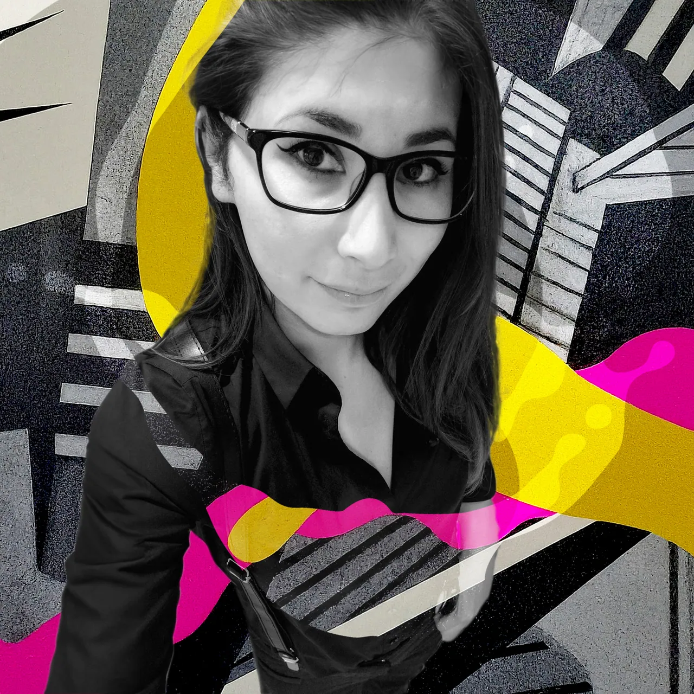
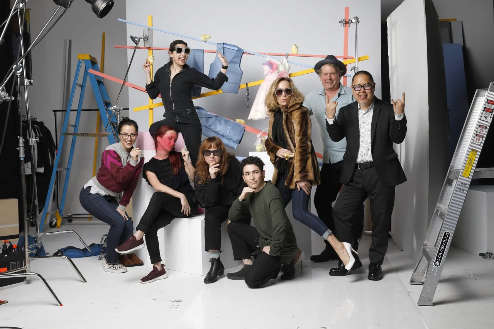
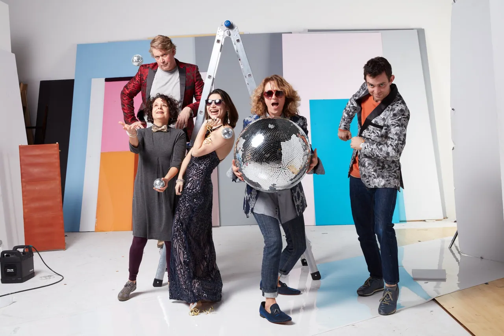
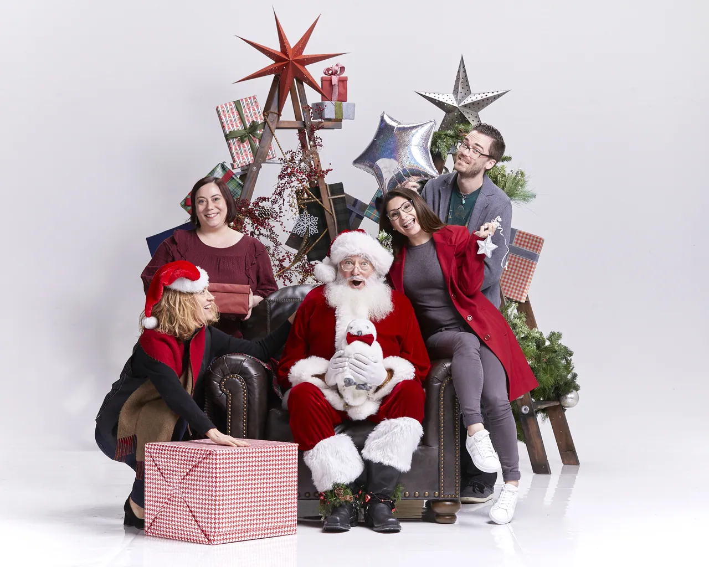

Hello, I’m Monica.
I’m a creative director who loves the craft and works at the detail of the pixel.
I started in editorial design at Mexico City’s Grupo Reforma, art directing magazines and newspaper supplements. I carried that eye into packaging at Sunrider, fashion campaigns at K&G, and launch campaigns at Maxar Technologies.
Today I lead marketing and communications at Tessellations School in Cupertino, where I’ve built a brand system, a design system, and the campaigns that sit on top of them.
I work in English and Spanish, and I like projects where a clear idea has to survive every channel it touches.
How I work
- 01
Information
I start with the audience and the facts, so the idea has something real to stand on.
- 02
Collaboration
The best work comes from the people around the table, so I make room for photographers, writers, engineers and clients.
- 03
Fun
Care and play aren’t opposites. People remember work that was clearly enjoyed.
Behind the scenes of K&G campaigns I planned. Ideas get made by a team, and I like the room to be one where people enjoy the work.



It’s all about the journey…
Director of Marketing & Communications | Tessellations School
Brand, creative direction, marketing and communications
Cupertino, CA · Oct 2024 – Present
Creative Art Director | Maxar Technologies
Marketing and communications for space infrastructure
Palo Alto, CA · Aug 2022 – Sep 2023
Art Director | K&G Fashion Superstore
Integrated and bilingual campaigns
Fremont, CA · Feb 2018 – Feb 2022
Senior Graphic Designer | Sunrider International
Packaging and marketing collateral
Los Angeles, CA · Mar 2016 – Jul 2017
Independent Designer | Imakion
Branding and collateral
Aug 2014 – Feb 2016
Graphic Designer to Senior Designer | Grupo Reforma
Editorial design: Club and Universitarios
Mexico City · 2006 – 2013
Cross-cultural
Two languages, many design cultures
I trained at UNAM in Mexico City and have worked on both sides of the border. Working natively in Spanish and English, I read audiences, idioms and visual references in both, so a bilingual campaign stays true in each language.
The Bay Area is where that range keeps growing. My colleagues at Sunrider opened my eyes to the vastness of language, and at Tessellations I work with families and staff who have come from Dubai, India, China, Pakistan, Spain and many other places. Connecting with them makes me a better communicator, and a better person.
What I do
- Creative direction
- Brand systems and guidelines
- Integrated and bilingual campaigns
- Editorial and packaging design
- Photo and video art direction
- Creative team leadership